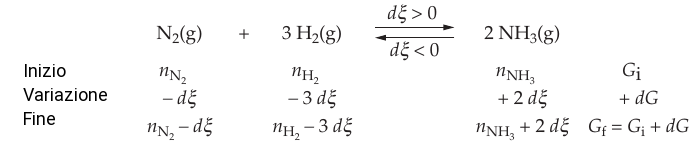

The reaction Gibbs energy
Abbiamo visto che un processo spontaneo è tale per cui (ΔG)T,P < 0. Adesso valuteremo la spontaneità delle reazioni chimiche ricavando una relazione tra G è la variazione di composizione. Si consideri la generica reazione, descritta dall'equazione bilanciata
νAA + νBB ⇌ νYY + νZZ
where the ni’s are the stoichiometric numbers in the reaction, which are adimensional. A stoichiometric number is positive for products and negative for reactants. The μi’s are the chemical potentials of the species in the reaction.
L'avanzamento della reazione è determinato dalla quantità ξ detta grado di avanzamento della reazione che ha come unità di misura le moli. Tale grandezza varia da 0 a un certo valore massimo imposto dalla stechiometria della reazione. Il segno di ξ determina la direzione della reazione; Quando dξ > 0 la reazione procede verso destra in misura infinitesima. La variazione infinitesima di ciascun componente è data da:
dni = νi dξ
The Gibbs energy for the system at equilibrium is
Dato che il potenziale chimico di una specie è dato da:
Possiamo riscrivere la 5.2, come
dG = −SdT + VdP + μAdnA + μBdnB + μYdnY + μZdnZ
Per una reazione che ha luogo a T e P, costanti:
dG = ∑i μidni
nel caso specifico quindi:
dG = ∑i μ dni = μAdnA + μBdnB + μYdnY + μZdnZ (T e P costanti)
Sostituendo la 5.1 nella 5.3, si ottiene
dG = − μAdnAdξ − μBdnBdξ + μYdnYdξ + μZdnZdξ = (μAdnA + μBdnB− μAdnA − μBdnB)dξ
that is:
(∂G / ∂ξ)T,P = νYμY + νZμZ − νAμA − νBμB
This partial derivative is named reaction Gibbs energy, ∆rG,
Le unità di misura di ΔrG sono J mol-1.
5.1.1 Illustration Although ∆ normally signifies a difference in values, here ∆r signifies a derivative, the slope of G with respect to ξ. However, to see that there is a close relationship with the normal usage, suppose the reaction advances by dξ. Consider the equilibrium A ⇌ B, the corresponding change in Gibbs energy is
dG = μA dnA + μBdnB = −μAdξ + μB dξ = (μB − μA)dξ
This equation can be reorganized into
ΔrG = (∂G / ∂ξ)T,P = μB − μA
Il segno di tale derivata parziale indica in quale direazione il processo è spontaneo:
ΔrG < 0: la reazione procede verso destra spontaneamente sarà negativa;
ΔrG = 0. La reazione si trova all'equilibrio.
ΔrG > 0: Significa che la reazione è spontanea nel verso opposto.
I potenziali chimici si possono esprimere in termini di attività:
μi = μi° + RT ln ai (5.7)
Sostituendo i potenziali chimici nella 5.5, abbiamo:
ΔrG = νYμY° + νZμZ° − νAμA° − νBμB° + RT(νY ln aY + νZ ln aZ − νA ln aA − νB ln aB) (5.8)
that is:
ΔrG = ΔrG° + RT ln Q (5.9)
definying the reaction quotient, Q as
Q = ∏i aJνJ = activities of products/activities of reactants
Because reactants have negative stoichiometric numbers, they automatically appear as the denominator when the product is written out explicitly.
5.1.1 Example (Writing a reaction quotient) Consider the reaction 2A + 3B → C + 2D, in which case νA = −2, νB = −3, νC = +1, and νD = +2. The reaction quotient is then
Q = aA−2aB−3aCaD2 = (aC aD2)/(a2A aB3)
At equilibrium we saw that ΔrG = 0, thus:
0 = ΔrG° + RT ln Qeq
Il quoziente di reazione all'equilibrio Qeq equivale alla costante di equilibrio, abbiamo dunque:
ΔrG° = −RT ln K
Sistesi dell'ammoniaca
Vediamo un esempio concreto con la sitensti di Haber-Bosh dell'ammonica.
A tal fine consideriamo un sistema contenente N2(g), H2(g), e NH3(g) con nN2, nH2, nNH3, le moli iniziali di ciascun gas. Supponiamo che ogni variazione di composizione del sistema avvenga a T e P costanti. Supponiamo che avvenga una reazione tra idrogeno e azoto, provocando una variazione infinitesima della composizione del sistema, dξ:
Sostituendo la 5.1 nela 5.3 abbiamo che:
dG = 2μNH3 dξ − 3μH2dξ − μN2dξ
that is:
(∂G / ∂ξ)T,P = ΔrG = 2μNH3 − 3μH2 − μN2
Substituting the chemical potentials, we get:
ΔrG° = 2μ°NH3 − 3μH2° − μN2 + RT (ln aNH3 − ln aH2 − ln aN2)
letting
ΔrG° = 2μNH3 − 3μH2 − μN2
si ha:
ΔrG= ΔrG° + RT (ln aNH3 − ln aH2 − ln aN2)
The reaction quotient is
Q = aNH32 / (aN2 aH23)
per un gas le attività si esprimono come:
Q = (PNH3/P°)2 / [(PN2/P°) ⋅ (PH2/P°)3]
La pressione standard P° si pone uguale ad un bar, di conseguenza generalmente le P° non vengono indicate
Q = PNH32 / (PN2 ⋅ PH23)
bisogna tuttavia sempre tenere conto che Q è adimensionale.